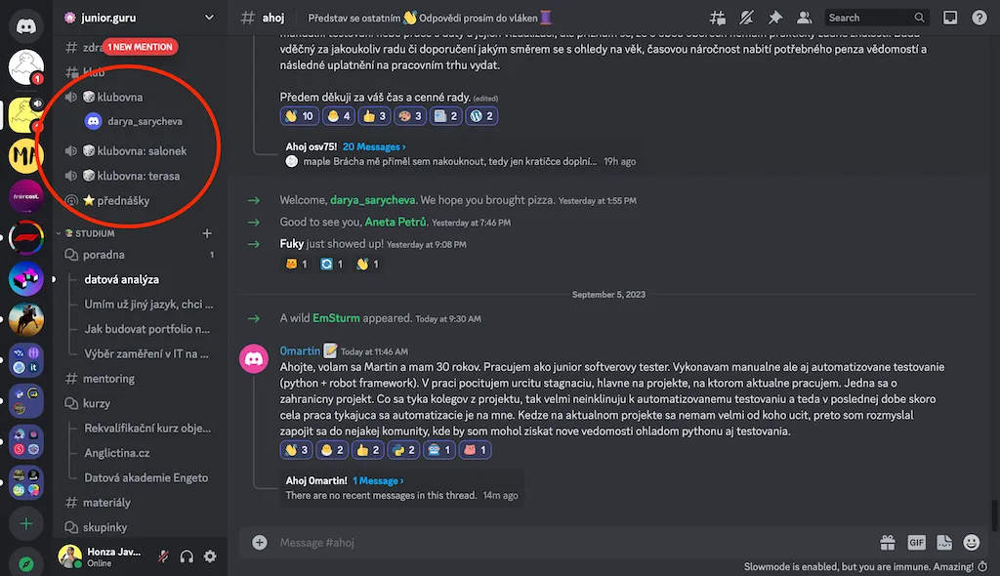
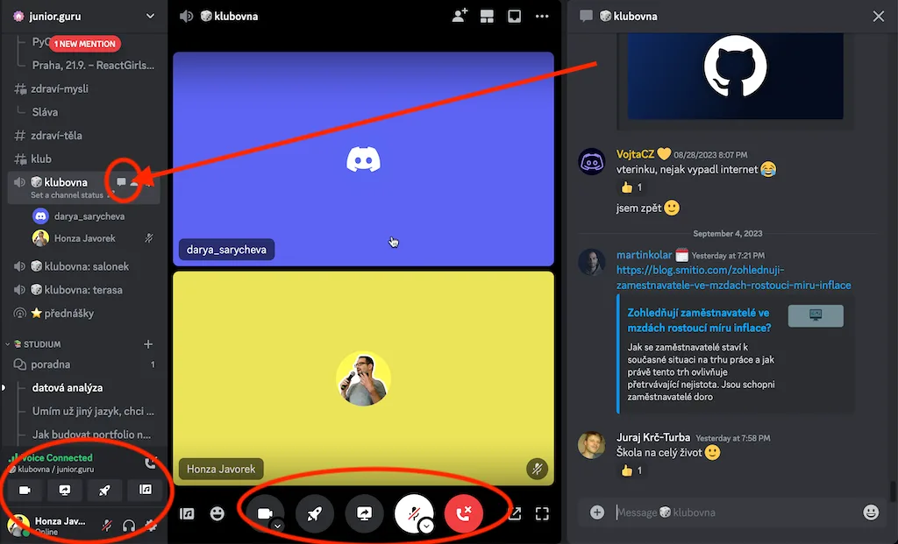

Pro přednášející#
Plánuje s tebou Honza přednášku pro členy klubu? Na této stránce najdeš veškeré info. Je fakt supr, že chceš s juniory sdílet svá moudra a zkušenosti. Na přednášku se moc těšíme!
Promo před přednáškou#
Aby mohl Honza udělat přednášce promo, je potřeba nejpozději týden před přednáškou (ale raději dřív) dodat následující info:
- Název přednášky
- Krátký popis přednášky
- Krátké bio, pár vět o tobě
- Odkazy na tvoje profily (LinkedIn, GitHub, Mastodon…) nebo webovky
- Tvá fotka nebo avatar (ideálně aspoň 500⨯500px)
- Tvoje firma a pozice v ní
Inspirovat se můžeš v seznamu přednášek, které už proběhly. Jestli umíš s GitHubem a nebojíš se upravovat YAML soubor, můžeš kouknout i na events.yml.
Přednášení#
Příklad, jak to celé vypadá: Záznam přednášky s Nelou Slezákovou Tady ještě časová osa večera, zdokumentovaná v bodech:
- Přednáší se na Discordu. Pokud Discord neznáš, projdi si tento návod do konce.
- Sraz je 30 min před začátkem v kanálu ⭐️ přednášky. Buď tam bude Honza, nebo jeho pomocník na videozáznamy. Odladíme techniku.
- Zhruba v čase začátku Honza svolá lidi do přednáškového kanálu a pár minut budete jen tak tlachat, než se přicourá obecenstvo.
- Honza tě krátce uvítá, představí, a předá ti slovo.
- Během samotné akce můžeš na Honzu kdykoliv houknout, je tam pro tebe. Pomůže ti vyřešit technický problém, nebo třeba udělat anketu v chatu. Honza je tvá prodloužená ruka.
- Lidé píšou dotazy do chatu. Mohou se přihlásit o slovo na mikrofon, ale nikdo to nedělá. Buď v průběhu nebo na konci Honza dotazy přečte a ty odpovídáš. Nebo odpovídáte spolu s Honzou. Žádný stres.
- Rozloučíme se. Jsi jediná hvězda večera, takže je na tobě, jestli chceš mluvit 20, 30, nebo 40 minut. V ideálním případě by přednáška neměla s následnými dotazy překročit hodinu, ale když přetáhnem… žádný stres 🙂
- Hned po ukončení bývá k dispozici záznam, který zůstane v archivu pro členy. Odkaz na záznam můžeš ty nebo členové klidně poslat kamarádům, ale nemusel by se šířit úplně veřejně (pokud jsme se nedohodli jinak).
Přístup do klubu#
Přednáška se celá odehraje na Discordu. Je to něco jako Slack, akorát že je to i sociální síť pro kohokoliv, kdo chce mít nějakou online skupinu. Kromě psaní se tam dá i volat s kamerou, sdílet video, apod. Budeš potřebovat dva účty:
- Pokud ještě nemáš, udělej si svůj soukromý účet na Discordu.
- Protože je klub placený, potřebuješ i registraci do systému, který se Honzovi stará o placení a přístupy. Honza ti dá odkaz, kterým se tam dostaneš bez placení – jako poděkování za přednášku máš rok v klubu zdarma. Jakmile se zaregistruješ, propojíš to se svým účtem na Discordu.
Pokud po přihlášení na Discord vidíš v levém panelu žluté kolečko s kuřetem, tak máš hotovo. Když na něj klikneš, otevře se ti naše komunita.
Přednášení na Discordu#
Komunity na Discordu se dělí do různých „kanálů“. Ty mohou být různých typů, nejčastěji textové. Jsou tam ale i hlasové, do kterých když přijdeš, tak si můžeš volat s lidmi.

Není to jako klasický jednorázový videohovor, je to spíš „místnost“, do které může kdokoliv kdykoliv přijít. V klubu tě zajímají především:
- 🎲 klubovna, hlasový kanál, který je k dispozici na cokoliv. Můžeš si tam vyzkoušet techniku.
- ⭐️ přednášky, speciální hlasový kanál určený vyloženě na přednášky. Mohou v něm mluvit jen vybraní jedinci, typicky moderátor a speaker. Tam budeš přednášet.
- #ahoj, textový kanál, kam se můžeš ostatním představit.
Když klikneš na nějaký hlasový kanál, uvidíš něco jako tohle:

Zvláštností Discordu je, že můžeš být v hovoru a zároveň dělat i jiné věci. Pokud klikneš např. na #ahoj, odejdeš sice z obrazovky hovoru, ale neodpojíš se. Vlevo dole zůstane ukazatel, že jsi stále v hovoru. Na ukazateli je i tlačítko na odpojení. Nebo se lze vrátit zpět do hlasového kanálu a ukončit hovor tam.
Ve výchozím nastavení Discord dělá zvuk při každé aktivitě v hlasovém kanálu, např. při připojení nového účastníka, odpojení, vypnutí zvuku, zapnutí, apod., což by tě asi rušilo. Zvuky si můžeš vypnout v Uživatelská nastavení (ozubené kolečko vlevo dole), stránka Oznámení, sekce Zvuky. Většina jich souvisí s hovory, takže je potřeba povypínat skoro vše.
Dej si pozor na to, že když sdílíš obrazovku, Discord ti skryje vše ostatní. Neuvidíš účastníky a může to být trochu jako mluvit do zdi, což tě může zaskočit. Raději si to předem vyzkoušej. Honza ti pomůže udržet kontakt s tím, co se děje v chatu.
Otázky a odpovědi#
Potřebuji Discord aplikaci?#
Pro základní používání sice Discord funguje i v prohlížeči, ale přednášení se sdílením obrazovky je náchylné k různým problémům, především pokud máš Linux. S aplikací problémy nebývají.
Mám si připravit slajdy?#
To je na tobě. Discord umožňuje sdílet obrazovku, takže ukazovat můžeš cokoliv. A pokud chceš jen mluvit, nemusíš ukazovat nic 😎
Kdo je v publiku?#
Publikum jsou především junioři, začátečníci v programování. Občas studenti, častěji ale lidé všeho věku a z různých koutů republiky, kteří se rekvalifikují do IT. Členy klubu jsou i seniorní programátoři a na přednášky mohou přijít, ale přednáška by neměla být pro ně. Cílem je podat úvod do problematiky a přiblížit ji začátečníkům. Používej slova, kterým porozumí téměř laik. Zkratky vysvětluj.
Pro lepší obrázek si projdi kanál #ahoj. Kdokoliv může klub zdarma vyzkoušet na dva týdny. Pokud se někdo přidá těsně před přednáškou, může na ni jít, ačkoliv si klub neplatí. Má tedy smysl na přednášku zvát i veřejnost mimo klub.
Kolik přijde lidí?#
Návštěvnost je různá a lze těžko předvídat. Někdy se živě připojí 30 lidí, někdy jen 10. Neříká to nic o popularitě přednášky. Mnoho členů počítá s tím, že si pustí záznam, protože v době živého vysílání nemají čas. Záznamy mívají 50 až 100 zhlédnutí.
Mohu promovat svoji firmu?#
Určitě! Pokud máte otevřené pozice pro juniory, nebo děláte něco, co by mohlo juniory zajímat, je to vyloženě žádoucí. I bez toho je ale vhodné říct něco o sobě, o svých úspěších, o firmě, pro kterou dělám, a co ta firma dělá.